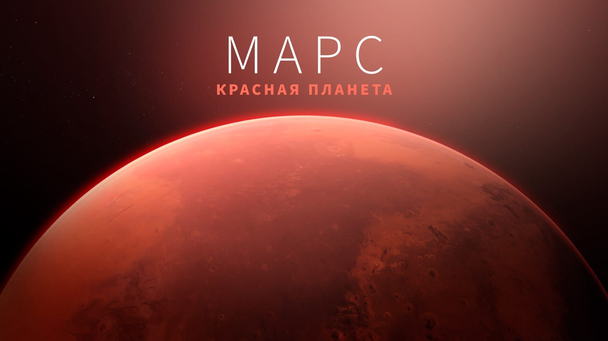
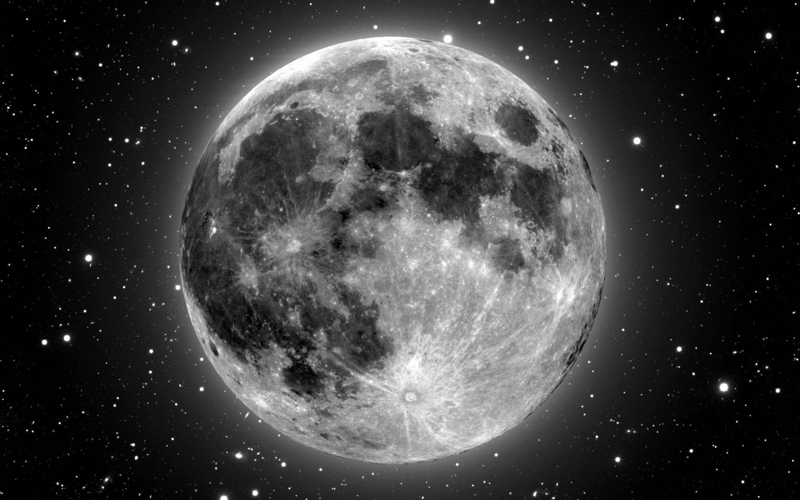
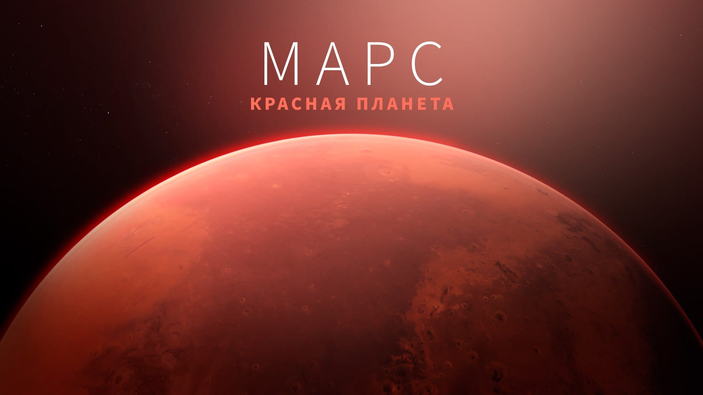
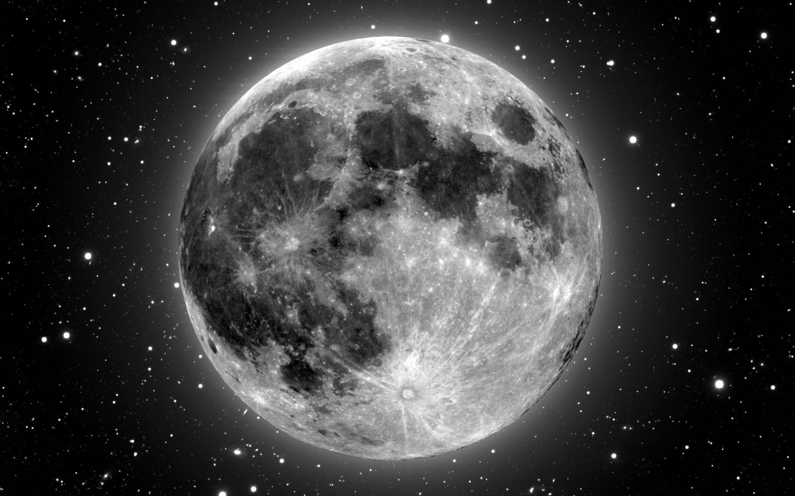

Космос — это бескрайнее пространство, наполненное миллиардами галактик. Наша галактика, Млечный Путь, состоит из сотен миллиардов звезд, включая наше Солнце. Считается, что возраст Вселенной составляет около 13,8 миллиарда лет, и она продолжает расширяться. В далеком космосе астрономы открывают новые галактики, планеты и звездные системы, некоторые из которых могут содержать условия для жизни. Современные телескопы, такие как «Джеймс Уэбб», позволяют изучать самые далекие уголки Вселенной и находить экзопланеты — миры за пределами Солнечной системы.
С момента запуска первого спутника в 1957 году человечество продвинулось далеко в освоении космоса. В 1961 году Юрий Гагарин стал первым человеком, совершившим орбитальный полет. Сейчас на орбите Земли функционирует Международная космическая станция (МКС), где ведутся исследования в области медицины, физики и астробиологии. Марсоходы, такие как Perseverance, изучают Красную планету, а частные компании, включая SpaceX, разрабатывают технологии для пилотируемых миссий на Луну и Марс. Будущие планы включают строительство лунных баз и возможность колонизации других планет.
Несмотря на все открытия, космос остается загадочным. Темная материя, которая, по расчетам ученых, составляет большую часть массы Вселенной, до сих пор не поддается наблюдению. Теории о темной энергии предполагают, что она ответственна за ускоренное расширение Вселенной. Черные дыры представляют еще одну загадку — их гравитация настолько сильна, что даже свет не может покинуть их пределы. Также остается открытым вопрос о существовании внеземной жизни: ученые ищут биологические маркеры на экзопланетах и исследуют сигналы, поступающие из глубокого космоса.
 


